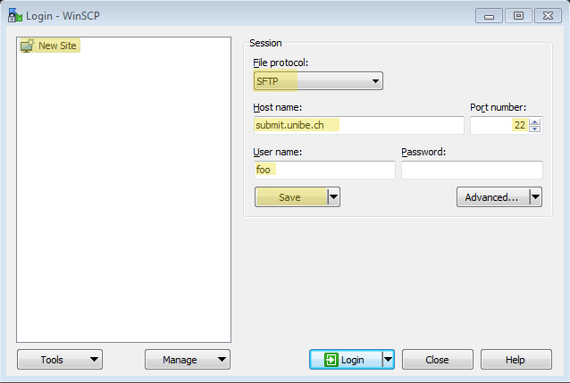
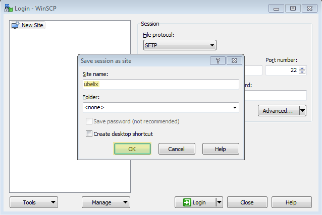
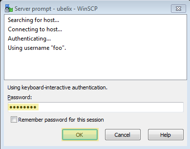
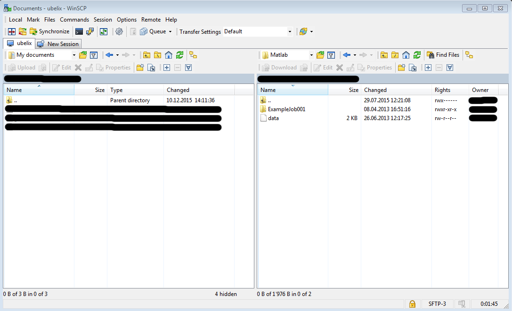

File Transfer from/to UBELIX
Description
This page contains some basic information about moving files between your local workstation and the cluster.
Mac/Linux/Windows
You can use different protocols/programs for transferring files from/to the cluster, depending on your need: Sftp, SCP, Rsync, Wget, and others.
The following commands are from on your local workstation as indicated by “local$”
If you have customized your SSH environment as described here, you can substitute your host alias for
Secure Copy (SCP) - Mac/Linux
Secure Copy is a program (also a protocol) that allows you to securely transfer files between local and remote hosts. SCP uses SSH for transferring data and managing authentication. SCP performs a plain linear copy of the specified files, while replacing already existing files with the same name. If you need more sophisticated control over your copy process, consider Rsync.
Syntax
scp [options] source destination
Some common options
- -r: copy directories recursively (Note that SCP follows symbolic links encountered in the tree traversal)
- -p: preserve modification time, access time, and modes from the original file
- -v: verbose mode
Copying Files from Your Local Workstation to UBELIX
Copy the file “~/dir/file01” to your remote home directory:
local$ scp ~/dir/file01 <username>@submit.unibe.ch:
Copy multiple files to the remote directory ~/bar:
The destination directory must already exist. You can create a directory from remote with: ssh
local$ scp ~/dir/file01 ~/dir/file02 ~/dir/file03 <username>@submit.unibe.ch:bar
Copy all files within directory ~/dir to the remote directory ~/bar:
Add the -r option (recursive) to also copy all subdirectories of ~/dir
local$ scp -r ~/dir/* <username>@submit.unibe.ch:bar
Copy the directory dir to your remote home directory:
This will create a new directory ~/dir on the remote host. If the directory ~/dir already exists, the following command adds the content of the source directory to the destination directory
local$ scp -r ~/dir <username>@submit.unibe.ch:
Copying Files from UBELIX to Your Local Workstation
Copy the remote file ~/bar/file01 to the current working directory on your local workstation:
local$ scp <username>@submit.unibe.ch:bar/file01 .
Copy multiple remote files to the local directory ~/dir:
The local directory ~/dir will be automatically created if it does not already exist
local$ scp <username>@submit.unibe.ch:bar/\{file02,file03,file04\} ~/dir
Copy the remote directory ~/bar to the current working directory on your local workstation:
local$ scp -r <username>@submit.unibe.ch:bar .
Remote Sync (Rsync) - Mac/Linux
Rsync implements a sophisticated algorithm that allows to transfer only missing/non-matching parts of a source file to update a target file. With this the process of transferring data may be significantly faster than simply replacing all data. Among other things, Rsync also allows you to specify complex filter rules to exclude certain files or directories located inside a directory that you want to sync.
Syntax
rsync [options] source destination
Some common options
- -r: copy directories recursively (does not preserve timestamps and permissions)
- -a: archive mode (like -r, but also preserves timestamps, permissions, ownership, and copies symlinks as symlinks)
- -z: compress data
- -v: verbose mode (additional v’s will increase verbosity level)
- -n: dry-run
- -h output numbers in a human readable format
Copying Files from Your Local Workstation to UBELIX
Copy the file ~/dir/file01 to your remote home directory:
local$ rsync ~/dir/file01 <username>@submit.unibe.ch:
Copy multiple files to your remote home directory:
local$ rsync file01 file02 file03 <username>@submit.unibe.ch:
Copy the local directory ~/dir to the remote directory ~/bar:
With a trailing slash (/) after the source directory only the content of the source directory is copied to the destination directory. Without a trailing slash both the source directory and the content of the directory are copied to the destination directory
local$ rsync -az ~/dir/ <username>@submit.unibe.ch:bar
Copying Files from UBELIX to Your Local Workstation
Copy the remote file ~/foo/file01 to your current working directory:
local$ rsync <username>@submit.unibe.ch:foo/file01 .
Copy the remote files ~/foo/file01 and ~/bar/file02 to your the local directory ~/dir:
local$ rsync <username>@submit.unibe.ch:\{foo/file01,bar/file02\} ~/dir
Copy the remote directory ~/foo to the local directory ~/dir:
With a trailing slash (/) after the source directory only the content of the source directory is copied to the destination directory. Without a trailing slash both the source directory and the content of the directory are copied to the destination directory.
local$ rsync -az <username>@submit.unibe.ch:foo/ ~/dir
Including/Excluding Files
With the –include/–exclude options you can specify patterns, that describe which files are not excluded/excluded from the copy process.
Use the -n option with the -v option to perform a dry-run while listing the files that would be copied
Exclude a specific directory:
rsync -av --exclude "subdir1" ~/dir/ <username>@submit.unibe.ch:
Copy only files with suffix ‘.txt’ and ‘.m’:
rsync -av --include "*.txt" --include "*.m" --exclude "*" ~/dir/ <username>@submit.unibe.ch:
Copy all files with suffix ‘.m’ within the source directory ~/dir (including matching files within subdirectories) to the remote destination directory ~/foo:
Use the –prune-empty-dirs option to omit copying empty directories
local$ rsync -av --prune-empty-dirs --include "*/" --include "*.m" --exclude "*" ~/dir/ <username>@submit.unibe.ch:foo
Deleting Files
None of the following commands will delete any files in your source folder
This delete options can be dangerous if used incorrectly! Perform a dry-run (-n option) first and verify that important files are not listed (-v option) for deletion
Use the –delete option to delete files/directories from the destination directory that are not/no more present in the source directory:
local$ rsync -av --delete ~/dir/ <username>@submit.unibe.ch:mfiles
With the –delete-excluded option you can additionally delete files from the destination directory that are excluded from transferring/syncing (not in the generated file list):
local$ rsync -av --prune-empty-dirs --delete-excluded --include "*/" --include "*.m" --exclude "*" ~/dir/ <username>@submit.unibe.ch:foo
WinSCP - Windows
We use WinSCP to illustrate file transfers from Windows. There are of course other tools that serve the same purpose.
Type
You can download WinSCP from https://winscp.net/eng/index.php
Open WinSCP and select “New Site” in the left field to define the session parameters:
File protocol: SFTP
Host name: submit.unibe.ch
Port number: 22
User name:
Click the “Save” button to save your site

Specify an alias for the site:
Site name:
Press the “OK” button to save the session as a site

In the left field, double-click on your alias to open the connection, enter your Campus Account password and click “OK”:

Now you can move (drag and drop) files between your work station and the submit host using the two views:

- Realted pages:
- File System Quota